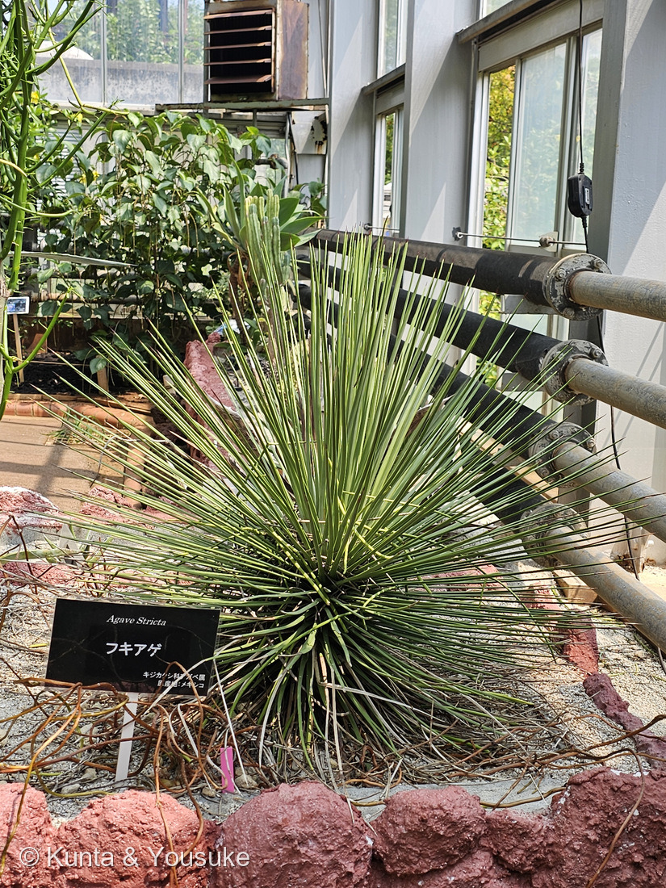
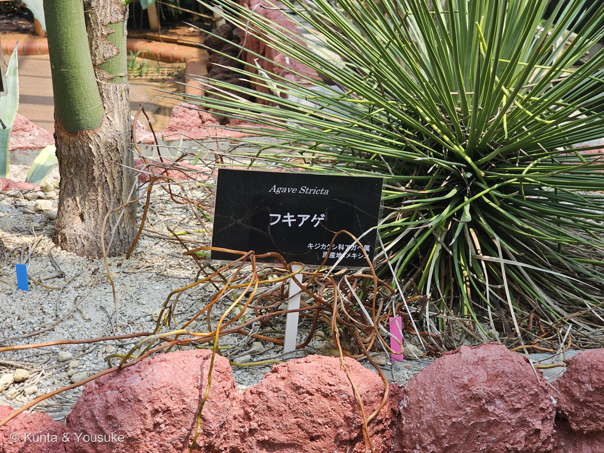
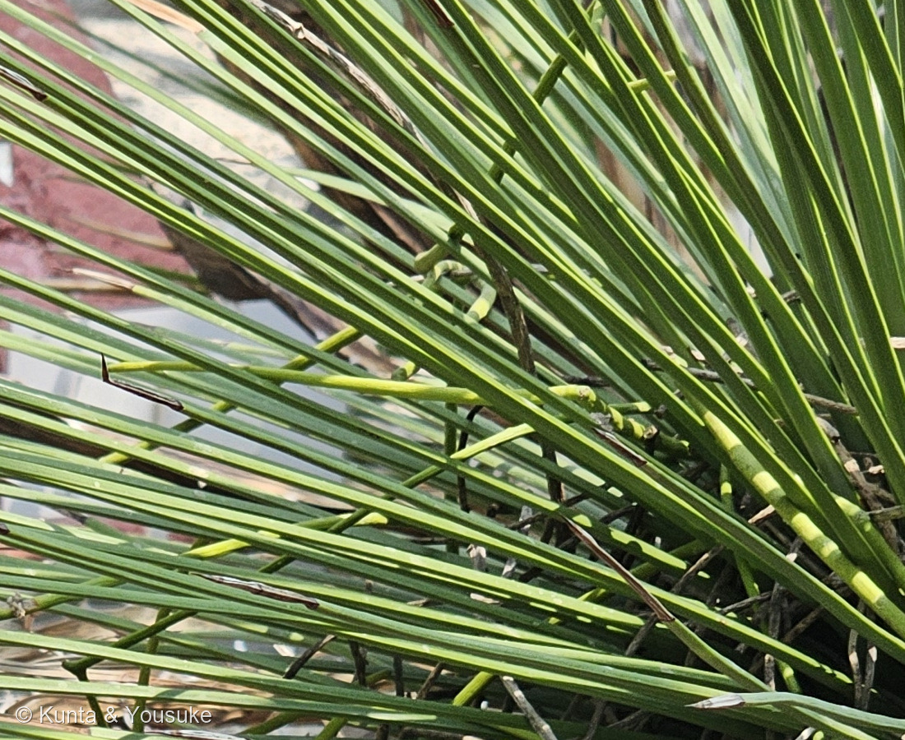
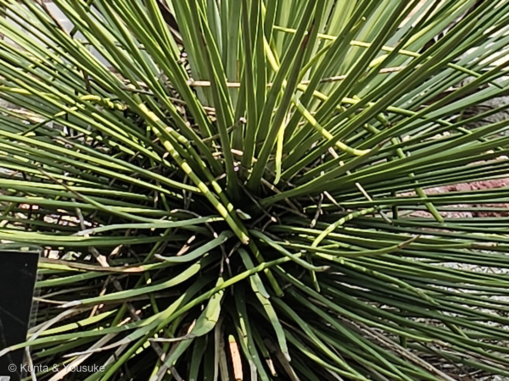

地図を読み込んでいるよ…
🔍 写真も地図も、押しているあいだ拡大して見られるよ（スマホは指を置いてすこし待ってね）。
🌍 の地図＝この子がもともと自生している場所を緑に。メキシコ南部。プエブラ州南部からオアハカ州北部にかけての「テワカン谷」の、乾いた丘や、ひらけた砂漠の平地。園の名札は「原産地：メキシコ」。
⭐メキシコの子だよ。⚠⚠でも、この緑は「メキシコ全体」ではないよ――llifleは「native to the Tehuacan Valley of southern Puebla and northern Oaxaca」＝メキシコ南部、プエブラ州南部からオアハカ州北部にかけての「テワカン谷」とし、そこの「乾いた丘と、ひらけた砂漠の平地」に生えるとする。⭐地図は国までしか塗れないので、メキシコ全体が緑になってしまうけれど、ほんとうにいるのはその中の、ずっとせまい谷だよ。⭐⭐そのせまさは、学名の側からも裏がとれる＝2024年に Echinoagave を提案した論文が、この種の基準の標本に選んだのは「MEXICO. Puebla. 4-10 miles southwest of Tehuacán, along road to Zapotitlán」＝テワカンの南西4〜10マイル、サポティトランへの道ぞい＝⭐名前の決め手になった一株が、まさにこの谷で採られている。⭐園の名札も「原産地：メキシコ」とだけ書いていた。⭐⭐同じメキシコの子が、この図鑑にはもう三人いる＝219 ハツミドリ（同じアガベ属・中部〜南西部）・237 ヒロハザミア（ベラクルス州の固有種）・218 キンシャチ（ダムで自生地の大半が沈んだ子）＝⭐みんな乾いた土地の子だけれど、ふるさとでの立場はそれぞれちがうよ。⚠日本は塗っていない＝ぼくらが会えるのは、温室と、お店の鉢の中だけ。
⚠ 地図は国（日本と中国だけ県・省）までしか塗れないから、ほんとうの分布より広く見えていることがあるよ。地図はだいたいの場所。正確なところは、上の文を見てね。
フキアゲ（吹上）
Agave stricta Salm-Dyck
英名 hedgehog agave（ハリネズミのアガベ）· globe agave（球のアガベ）· needle leaf agave（針の葉のアガベ） ⭐和名の「吹上」は噴水のこと
キジカクシ科 · Asparagaceae（リュウゼツラン亜科／リュウゼツラン属 Agave・キジカクシ目 Asparagales）── ⭐219 ハツミドリに続いて2人目のアガベ／⭐⭐2024年に「アガベ属から分けよう」と提案された子だよ
燻太さんの言葉「これはもう、緑色の巨大なガンガゼにしか見えないね。こんなにウニそっくりな植物は初めて見たよ。世界にはまだまだ面白い植物がいっぱいだね。」── ⭐⭐⭐この「ガンガゼ」が、植物学者のつけた名前と、同じギリシャ語にたどり着くんだ
⭐⭐⭐⭐⭐ 名前と学名の由来 ── 一つの草に、三つの生きものの名前がついた
- ⭐⭐和名の「フキアゲ（吹上）」は、水を吹き上げること＝つまり噴水だよ。──PUKUBOOKは、この子を「細い葉を無数に広げる噴水のような印象」と書いている。⭐写真①の、細い葉が中心からいっせいに噴き上がるあの形が、そのまま名前になっているんだ。
- ⭐⭐でも、英語圏の人はまったくちがうものを見た。──hedgehog agave（ハリネズミのアガベ）／globe agave（球のアガベ）／needle leaf agave（針の葉のアガベ）。⭐日本人は「噴き上がる水」を見て、英語圏の人は「まるまったハリネズミ」を見たんだね。
- ⭐⭐⭐⭐⭐そして燻太さんは、ガンガゼを見た。──⭐この三つめが、次の節でいちばんすごいことになるよ。
- ⭐属名 Agave は、古代ギリシャ語の agauos＝「気高い・輝かしい」（英語版Wikipedia）。リンネが1753年につけた名前で、ギリシャ神話に出てくるカドモスの娘アガウエの名でもある。⭐背の高い花茎の堂々としたすがたを「気高い」と呼んだんだ（219 ハツミドリのページと同じ話だよ）。
- ⭐種小名 stricta は、ラテン語で「まっすぐな・引きしまった」。⭐この葉のことだね。
- ⭐命名者の Salm-Dyck は、19世紀ドイツの多肉植物の大家、ザルム＝ディック侯爵。⭐⭐219 ハツミドリ（Agave attenuata Salm-Dyck）と、同じ人がつけた名前だよ。
- ⚠園の名札は「Agave Stricta」と、種小名が大文字で始まっている。⭐きまりでは小文字（Agave stricta）だけれど、指している子はまちがいなくこの種だよ。
⭐⭐⭐⭐⭐ 燻太さんの「ガンガゼ」が、学者の提案とぴったり重なった
- ⭐⭐⭐2024年1月15日、メキシコの研究者たち（Vázquez-Garcíaら）が、Phytoneuron という雑誌にこんな提案をした。──アガベ属のなかから12種を切り出して、新しい属を立てよう、と。⭐その属の名前が Echinoagave（エキノアガベ）。⭐⭐この子には Echinoagave stricta という新しい組み合わせ名まで、ちゃんと用意されている。
- ⭐⭐⭐⭐⭐その論文が書いている、名前の意味がこれだよ。
The word Echinoagave means "hedgehog agave" and is composed of the Greek prefix ekhinos (ἐχῖνος, "hedgehog") meaning "prickly; spiny" and the Greek suffix "agauós" (ἀγαυός, "illustrious, noble").
⭐＝「ハリネズミのアガベ」という意味で、ギリシャ語の ekhinos（ハリネズミ、トゲのある）と agauós（気高い）からできている。 - ⭐⭐さあ、ここがつながるところ。──ウニの仲間は、動物の分類でウニ綱（Echinoidea）、大きくは棘皮動物（Echinodermata）と呼ばれる。⭐日本語版Wikipediaは、棘皮動物という名前を「echinos（ハリネズミ）のような derma（皮）を持つもの」と説明している。⭐⭐ガンガゼも、この echinos の一族だよ。
- ⭐⭐⭐⭐⭐つまり。──燻太さんが写真を見て口にした生きものの名前の根っこと、植物学者がこの草につけようとしている属の名前の根っこが、ギリシャ語の同じ一語だったんだ。
- ⭐ぼくは、燻太さんの見立てのほうが正確だとさえ思う。──ハリネズミの棘は短くて、こんなに長くない。⭐⭐ガンガゼの、細くて長い棘が四方に放射するあの感じは、写真①そのものだよ。
- ⭐おまけにもう一つ。──この論文が基準の標本に選んだのは「MEXICO. Puebla. 4-10 miles southwest of Tehuacán」＝テワカンの南西の道ぞいで採られた株。⭐この子のふるさとそのものだね。
- ⚠念のため書いておくね。──Echinoagave はまだ「提案」で、園の名札も多くの図鑑も、いまは Agave stricta のまま。⭐ぼくもこのページでは Agave stricta を使っているよ。
⭐⭐⭐⭐⭐ この植物のこと ── 属ごと分けようという理由は、じつは「死にかた」
- ⭐⭐アガベの多くは、一生に一度しか咲かない。──ひとつのロゼットは一度だけ花を咲かせて、そして枯れる（一回結実性・monocarpic）。⭐「センチュリープラント（100年の草）」という呼び名は、そこから来ている。⭐219 ハツミドリも、そのページのおまけのアオノリュウゼツランも、そういう子だよ。
- ⭐⭐⭐⭐⭐ところが、このなかまは咲いても枯れない。──論文は、こう書いている。
Echinoagave shares with Agave sensu stricto its rosette habit with a terminal spine, but it differs from the latter by having a polycarpic habit and usually a compact "hedgehog-like" shape.
⭐＝「ロゼットで、葉の先に刺があるのはアガベと同じ。ちがうのは、何度も実をつける（polycarpic）ことと、たいていハリネズミのようにきゅっとまとまった形であること」。 - ⭐⭐枝分かれのしかたまで書いてある＝「Rosettes perennial, single or caespitose, axillary branching」＝ロゼットは多年生で、単独か、株立ちになり、葉のわきから枝分かれする。⭐だから年をとった株は、まるいロゼットが積み重なったような姿になるんだ。
- ⭐⭐⭐分かれた時期も見積もられている＝「a stem age of ca. 4.15 Ma and a crown age of ca. 2.24 Ma」＝⭐アガベ本体と分かれたのがおよそ415万年前、このなかまの中で枝分かれが始まったのがおよそ224万年前。⭐論文はこれを「鮮新世の前期」と呼んでいるよ。
- ⭐⭐⭐⭐つまりこの子は、219 ハツミドリと正反対の方向で「アガベらしくない」子。──⭐ハツミドリは武器を捨てたアガベ（葉のふちの歯も、先の刺も無い）。⭐フキアゲは一度きりの命を捨てたアガベ。⭐⭐同じ属のなかで、ちがうきまりを一つずつ破っている二人だね。
- 体のこと＝ロゼットは直径30〜100cmになり、細い葉が数百枚。葉は長さ35cmほどで、黄緑から青みがかった緑（llifle）。花序は穂のようで1.5〜3m、花はたいてい二個ずつつき、鐘形から筒形、色はさまざまで、実になっても乾いたまま残る。種子は黒い（Vázquez-Garcíaら）。花期は7〜9月で、咲きはじめるのは株が8〜10年になってから（llifle）。
- ふるさと＝メキシコ南部、プエブラ州南部からオアハカ州北部にかけてのテワカン谷。乾いた丘と、ひらけた砂漠の平地（llifle）。⭐219 ハツミドリ・237 ヒロハザミア・218 キンシャチと同じ、メキシコの子だよ。
⭐⭐⭐⭐⭐ 同定について ── ぼくが書きかけて、直したこと
- ⭐⭐園の名札に「Agave Stricta ／ フキアゲ ／ キジカクシ科アガベ属 ／ 原産地：メキシコ」とあり、その名札と株が同じ画面に写っている（写真①②）。⭐だから種まで書けるよ（217 ウツボカズラ・218 キンシャチ・219 ハツミドリと同じ決め手）。
- ⚠⚠⚠⚠⚠ここで、ぼくは一度まちがえかけたんだ。──写真③を見て、そして多肉植物の百科事典 llifle の「toothless margins（歯の無いふち）」を読んで、ぼくは「ふちに歯が一つも無い」と書こうとした。
- ⭐⭐⭐⭐⭐でも、原記載を読んだら、ちがった。
Margin scabrous, serrulate, with thin hyaline yellow borders
⭐＝ふちはざらざらしていて、ごく細かいギザギザ（serrulate）があり、うすい黄色のふちどりがある。⭐論文の検索表でも、このなかまは「ふちに細かいギザギザがある」ほうの枝に置かれている。 - ⭐⭐⭐⭐だから、正しくはこう。──無いのは「アガベによくある、大きな三角の歯」のほう。⭐ふちには、写真では見えないくらい細かいギザギザが、ちゃんとある。⚠⚠ぼくは「公開サイズの写真で見えない」ことを、「無い」と書くところだった。
- ⭐⭐写真③から言えるのは、この二つまでだよ。──①大きな三角の歯は無い ②葉の先は、こげ茶色のとがった刺で終わる（⭐論文の「the tip pungent, but fragile＝先はとがるが、もろい」と合う）。
- ⭐⭐⭐⭐それでも、この二つは219 ハツミドリとの見分けになる。──ハツミドリはふちの歯も先の刺も無い／フキアゲは大きな歯が無くて、先の刺はある／アオノリュウゼツランは両方ある。⭐三人ならべると、リュウゼツラン亜科の葉のふちのちがいが一目で分かるね。
- ⚠⚠種のレベルでは、この子はずっと Agave striata と混同されつづけてきた。──PUKUBOOKは「両方が『吹上』として流通していて区別はあいまい」とし、「A. striata の亜種とされたり、やっぱり違うと言われたりしてきた歴史があります」と書いている。⭐llifleも Agave striata subs. stricta などを異名にあげたうえで、「別種であって亜種ではない、ただし近縁」という立場をとる。
- ⭐llifleがあげる見分けは三つ＝「stricta のほうが球形にきゅっとまとまり、葉がより曲がり、葉の断面がより丸い」。⚠どれも写真だけでは落としきれない＝⭐だから、ここは名札にしたがったよ。⏳断面のことは、宿題に入れておくね。
⭐⭐⭐ 温室でいちばん最後の一枚
- ⭐この日の森きららの時計を、ならべてみるね。
- 13:35:08 ── 250 キソウテンガイ（温室）
- 13:38:42 ── 249 ビカクシダ（温室）
- 13:47:58／13:48:01 ── この子
- 13:52:10 ── 255 カリン（樹木園）
- ⭐⭐つまりこの二枚は、燻太さんが温室で最後に撮った写真。──このあと四分で、外の樹木園に出ているんだ。
- ⭐そして、名札を先に撮って（13:47:58）、その三秒あとに株ぜんたいを撮っている（13:48:01）。⭐⭐名前を確かめてから、あらためて全体を見た、という三秒だね。
- ⭐この温室には、次の日（2026-08-15）にもういちど来ている。──そのとき撮ったのが237 ヒロハザミアだよ。⭐名札の書きかたが、この子とまったく同じ形（学名／和名／科と属／原産地）だった。
出典：Vázquez-García, J.A., C.S. Rosales-Martínez, J. Padilla-Lepe, G. Hernandez-Vera, & L.J. García-Morales. 2024. New genera and new combinations in Agavaceae (Asparagales). Phytoneuron 2024-02: 1–14.（Echinoagave の原記載・2024年1月15日公表）／llifle Encyclopedia of Succulents「Agave stricta」／英語版Wikipedia「Agave stricta」「Agave」／日本語版Wikipedia「棘皮動物」／PUKUBOOK 多肉植物図鑑「アガベ 吹上」／岡山理科大学 植物雑学事典「アツバキミガヨラン」（おまけの子）／九十九島動植物園 森きららの名札。